Everything is filmed or captured on a real phone (a OnePlus 13), with no tricks and no retouched screens.
Dante / Trailer
With sound: it's Dante's music.
The desktop and effects
The living desktopThe HivePhoto bubbles and poolThe dock in its shieldDante FX: layersDante FX: aurora, neon, fireAurora materialThe materialsDante Engine: themesThe universe tourThe desktop
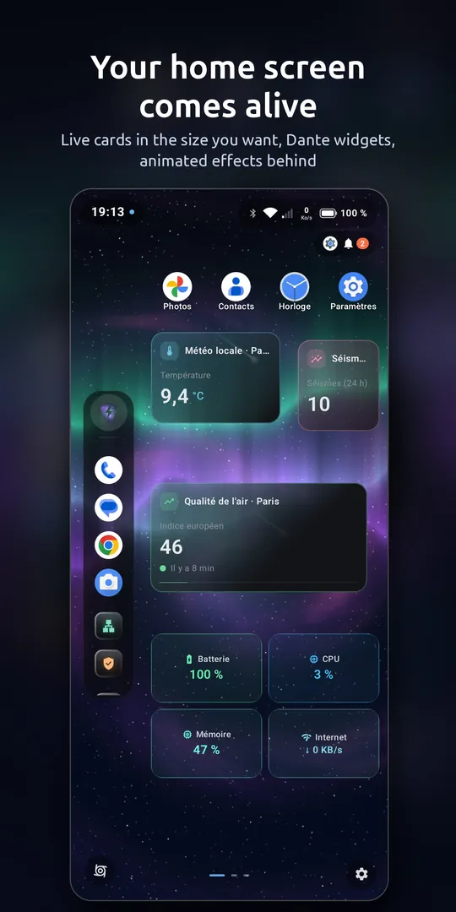
The living desktopThe 3D Hive
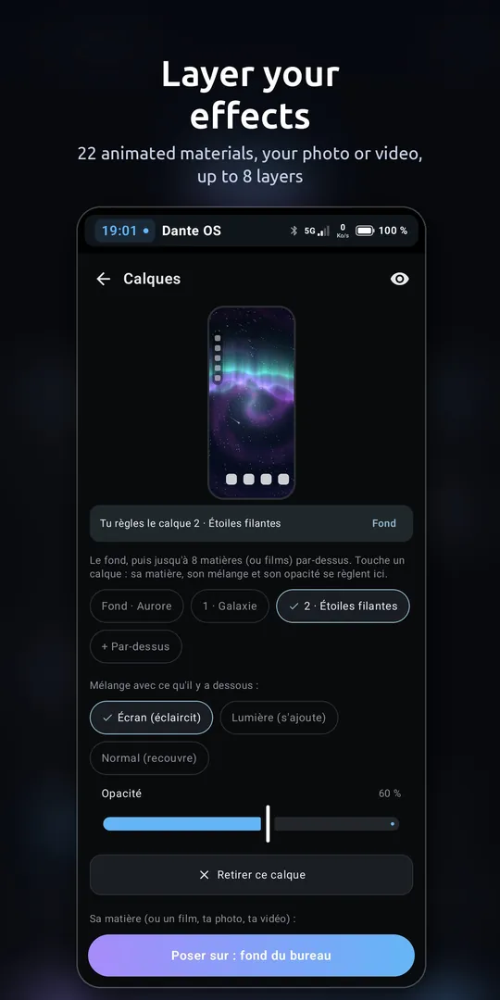
Dante FX
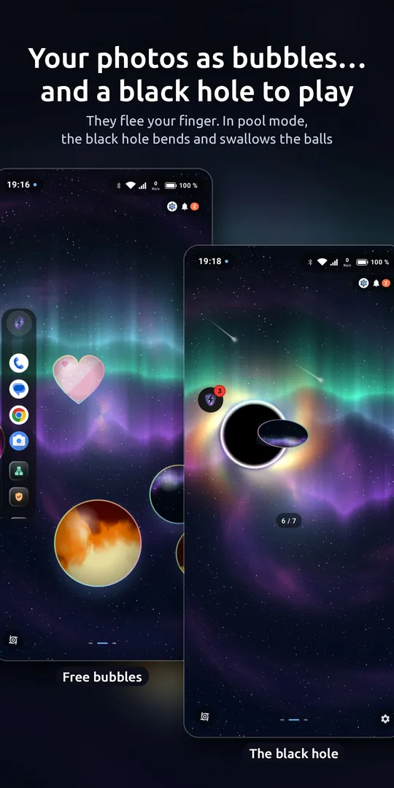
Photo bubbles
The shield and the dock
The 7 dock foldsThe 8 shield effectsThe shield materialsPicking the shield materialThe dock in its shield
Mini-apps
Mini-app: Dante CosmosMini-app: the EarthMini-app: Black holeMini-app: the Milky Way
The 7 Hives
The 7 HivesHive · WatchHive · NeonHive · SphereHive · GalaxyHive · VortexHive · Black holeHive · 3D tunnelHive styles
Dante Engine: themesDante Engine: fontsDante Engine: the clockDante Engine: coloursDante Engine: status barDante Engine: Info popup
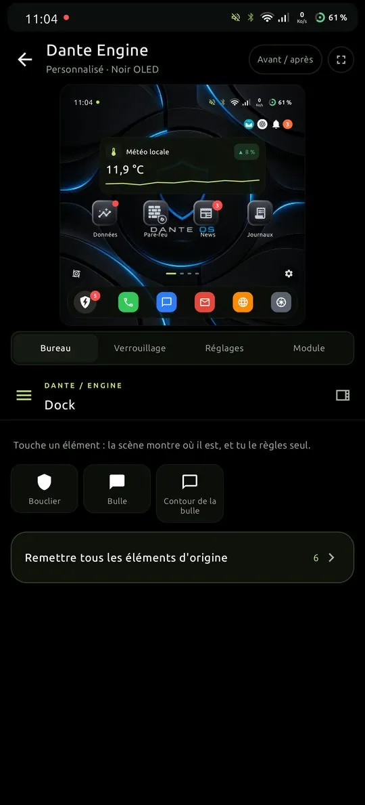
Dante Engine: dock
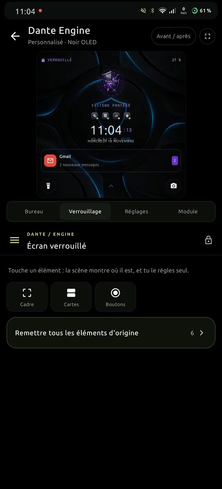
Dante Engine: lock screen
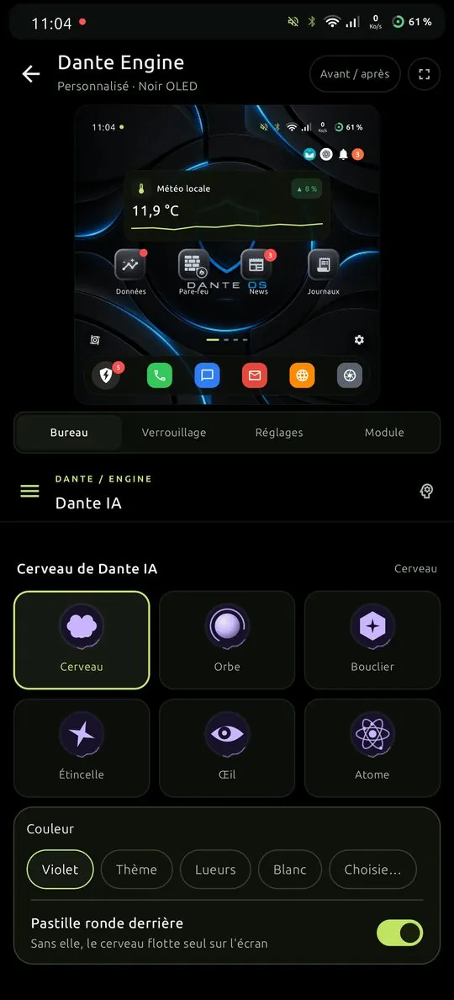
Dante Engine: Dante IA
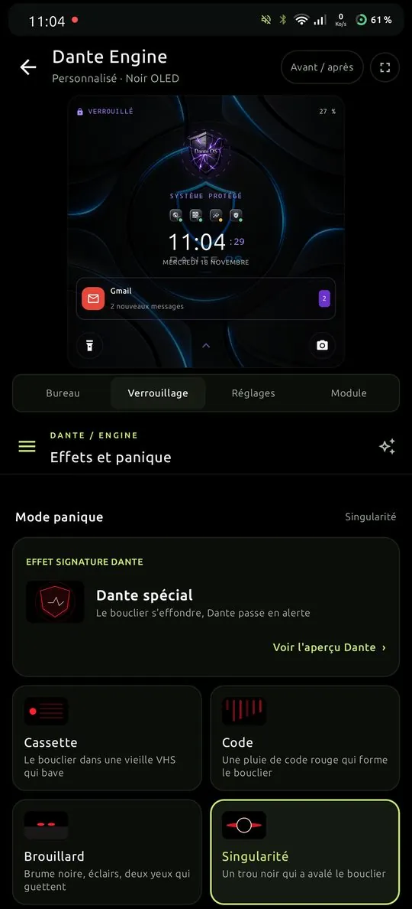
Dante Engine: panic
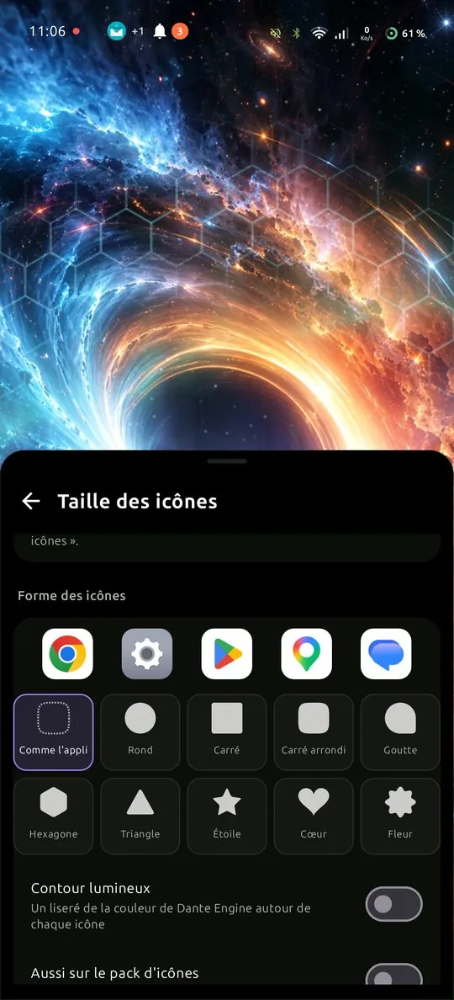
Icon shapes
The bar, Controls, Settings
Tap the clock: the Info popupSwipe down on the left: notificationsSwipe on the right: Controls, then SettingsLong-press the clock: multitaskingTap the clock: the Info popup
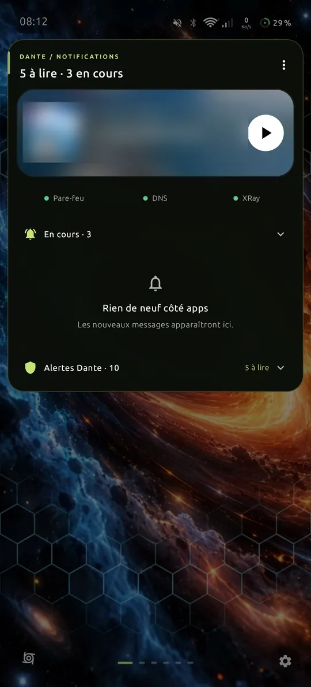
Swipe down on the left: notifications
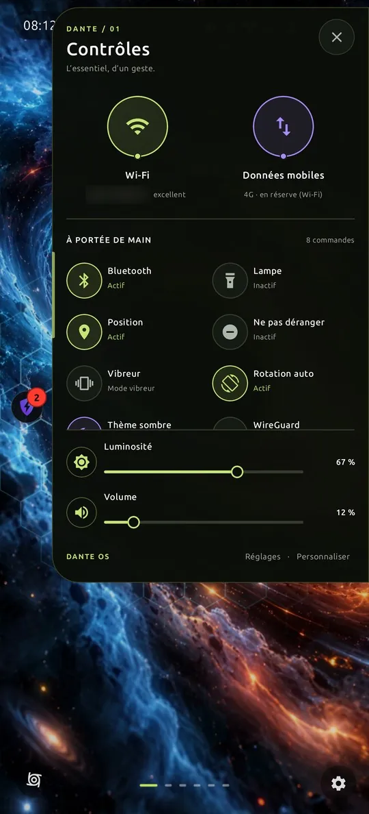
Swipe down on the right: Controls
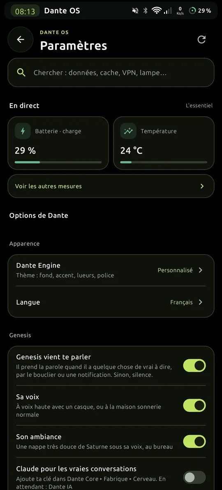
Settings: live and options
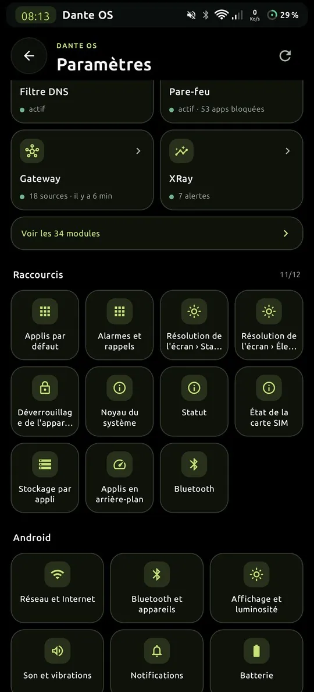
Settings: modules and shortcutsSettings: Android in familiesSettings: Genesis and interface
The desktop
The desktop
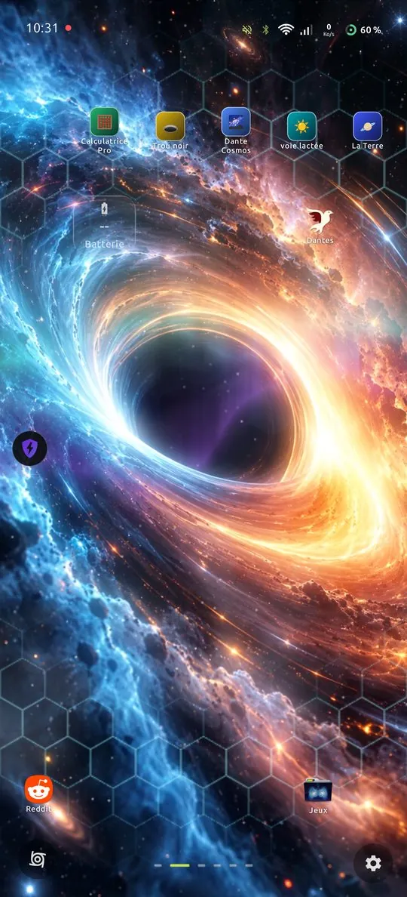
Mini-apps on the desktopPhoto bubblesA Gateway card